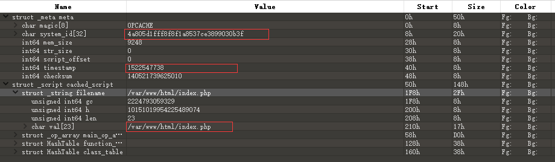
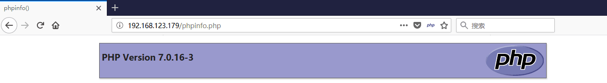
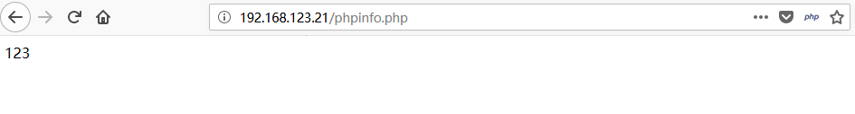
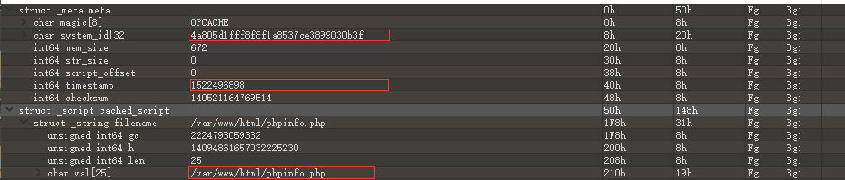
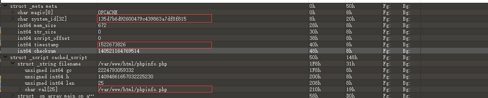
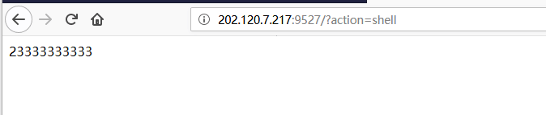
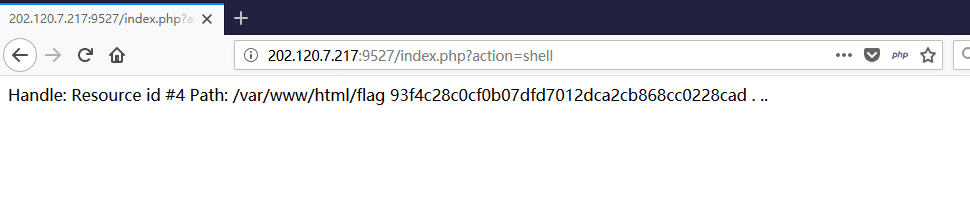
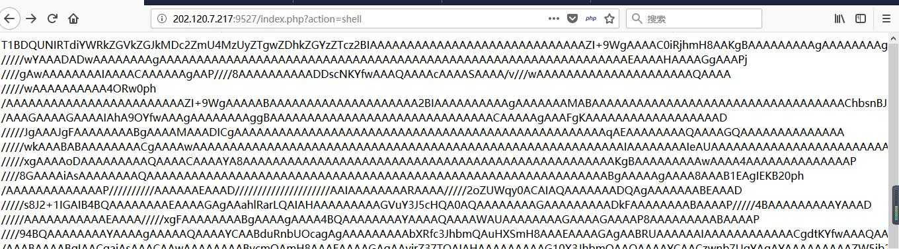

opcache缓存getshell
opcache是啥
opencache是一种php7自带的缓存引擎，它将编译过一遍的的php脚本以字节码文件的形式缓存在特定目录中（在php.ini中指定）。这样节省了每次访问同一脚本都要加载和解析的时间开销。（先检查有没有bin文件有就直接用）
动手配置
在php.ini，打开有关opcache的选项（即保持默认），然后修改以下两项。
1 | opcache.file_cache_only = 1 #默认是0，设置为1后强制所有缓存以文件形式存在，否则可能缓存可能会存在于内存中 |
缓存路径
简单的举个栗子，比如我们访问/var/www/html/index.php，那么字节缓存的路径是/tmp/cache/[system_id]/var/www/html/index.php.bin。其中system_id，由php veriosn，Zend Extension Build，System（系统架构）三部分决定。这三样的东西都可以在phpinfo找到。具体的自动化生成脚本可以在github的这个项目中找到。在下文中把字节码文件简称问bin文件，把与之对应的php文件简称为源文件。
利用方法
正如上面提到的，在opcache机制下，有bin文件会直接执行bin文件，那么如果配合上传漏洞这一类漏洞是不是达到将bin写到指定目录，然后访问相应的php文件达到隐蔽getshell的目的？
利用的限制
根据前面的描述，我们可以总结如下的限制条件
- opcache要打开(php7自带但默认不打开)
- opcache.file_cache_only = 1
- 知道systemid，opcache缓存目录
- 类文件上传漏洞
- 知道bin文件所对应php的时间戳（一个秒级时间戳，这点稍后会解释）
前三点可以通过phpinfo直接或计算得知，重点说说第五点，在phpinfo中有个叫opcache.validate_timestamps的配置它默认为1，这应该是为安全性而考虑的，在bin文件在创建时会在文件内容中写入一个时间戳，这个时间戳跟源文件一样，在执行bin文件之前php会检查时间戳是否一致，如果不一致则丢弃重新创建bin文件。个人认为第五点是最苛刻的因为在cms闭源的情况下几乎不可猜。
bin文件结构分析
依然在刚才给出的链接中下载分析模板，并在010editor中导入，不要用010editor自带的分析模板有坑。用红色框标注的地方就是和目标服务器不一样需要修改的地方，原谅我啰嗦一遍，这三个框分别代表system_id, 时间戳，路径。

实验验证
kali phpinfo.php
ubuntu phpinfo.php

拿到kali的phpinfo bin文件

修改时间戳 system_id

复制ubuntu相应文件中然后重新访问

CTF中
这次在0ctf遇到了这种攻击方式，代码是这样的
1 |
|
?action=phpinfo可以得到system_id7.0.28API3 151012,NTSBIN_SIZEOF_CHAR48888 -> 7badddeddbd076fe8352e80d8ddf3e73
?action=pwd 拿到自己路径sandbox/053b454d2e71b6a9b78f7a8c3d27e527703d3e44/
结合上面的两个进一步推断出缓存路径/tmp/cache/7badddeddbd076fe8352e80d8ddf3e73/var/www/html/sandbox/053b454d2e71b6a9b78f7a8c3d27e527703d3e44/index.php
在自己本地环境中建立sandbox/053b454d2e71b6a9b78f7a8c3d27e527703d3e44/index.php并写上自己的payload,切记这一点当时没有做出来就是本地没有建立一模一样的路径。目测都有ban函数，所以就纯写了一点东西，验证线上是否能输出。

然后测试了glob，发现没有结果最后用
读到目录，然后用之前给的代码中已经使用的high_light读文件（肯定不会被ban）
1 |
|


读出来又是是一个bin文件，不会逆。。。